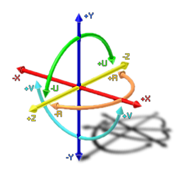

joystick_rpos(id);
| Argument | Description |
|---|---|
| id | The id of the joystick (1 or 2). |
Returns : Real
This function will return the position of the r-axis of the joystick/gamepad with the given id, with the value being somewhere between -1 and 1. See the image below for the relationship between the different axes
of rotation that are accepted. The id can be either 1 or 2 as GameMaker:Studio only accepts input from a maximum of two joysticks/gamepads.
NOTE : This function is only available for Windows.

rr += spd * joystick_rpos(1);
The above code uses the returned value of the joystick_ypos function to set a variable within the instance.